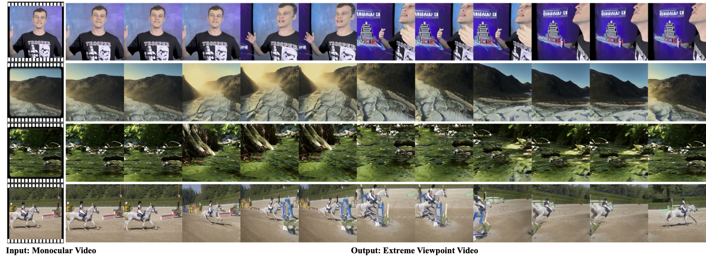

EX-4D: EXtreme Viewpoint 4D Video Synthesis via Depth Watertight Mesh
Tao Hu*, Haoyang Peng*, Yuewen Ma
Pico, Bytedance
* Equal Contribution.

Abstract
Generating high-quality camera-controllable videos from monocular input is a challenging task, particularly under extreme viewpoint. Existing methods often struggle with geometric inconsistencies and occlusion artifacts in boundaries, leading to degraded visual quality. In this paper, we introduce EX-4D, a novel framework that addresses these challenges through a Depth Watertight Mesh representation. The representation serves as a robust geometric prior by explicitly modeling both visible and occluded regions, ensuring geometric consistency in extreme camera pose. To overcome the lack of paired multi-view datasets, we propose a simulated masking strategy that generates effective training data only from monocular videos. Additionally, a lightweight LoRA-based video diffusion adapter is employed to synthesize high-quality, physically consistent, and temporally coherent videos. Extensive experiments demonstrate that EX-4D outperforms state-of-the-art methods in terms of physical consistency and extreme-view quality, enabling practical 4D video generation.
Generation Pipeline of EX-4D

Fig. 3. Overview of the 3D Generator for our proposed EX-4D. In the first stage, the diffusion model synthesizes a low-resolution EX-4D from random noise with text or image as condition. During the second stage, we adopt a Spatial-Temporal Upsampler to generate high-quality EX-4D. Finally, EX-4D can be directly converted to 3D Mesh via the decoding process.
This page is sourced from LGM https://me.kiui.moe/lgm.